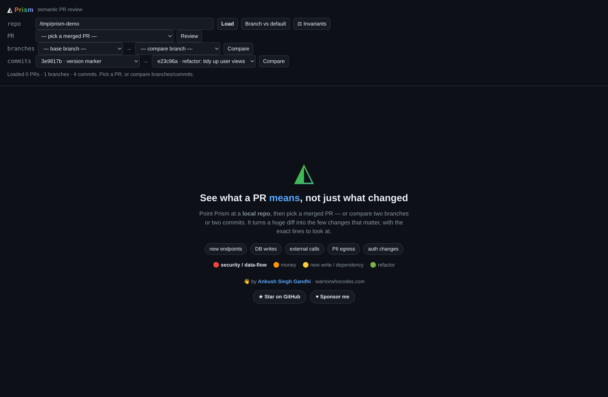
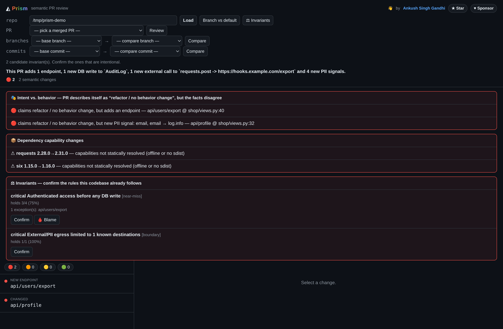

The diff answers "what changed." The map answers "what's here." Both run on the same deterministic engine — Python's own parser, no LLM.
The PR reviewer answers "what changed?". lenscheck map answers "what is here?" — every endpoint in the repo, grouped by Django app and ranked worst-first, with the same seven facts and the same flow graph. Same engine as the diff, with the comparison turned off. Perfect for onboarding a codebase, an audit, or finding the risky corners nobody remembers.
# the whole surface of the app, riskiest first payments/ 🔴 POST /api/payments/charge auth:user db:Order(w) ext:Stripe PII:email→ext 🟠 GET /api/payments/{id} auth:user db:Order(r) accounts/ 🟡 POST /api/accounts/reset auth:public db:User(w) 🟢 GET /api/accounts/me auth:user db:User(r)
Most consistency bugs hide between services, not inside one. lenscheck crossrepo takes two or more repos and finds every DB table they share — endpoint-level — and flags where both write the same table (a cross-service race). The map is free; tables are grouped worst-first (🔴 multi-writer, then 🟡 producer → consumer, then read-only), so 80 shared tables become a short "look here first" list.
# shared tables, riskiest first 🔴 leads multi-writer cms(w) billing(w) 29 write endpoints · PII→client 🔴 campaigns multi-writer cms(w) billing(w) PII→client · PII→ext 🟡 form_microsites producer→consumer cms(w) billing(r)
A Claude Code skill that turns several repos into a browsable onboarding brain — a graph, a system map, "start here" guides, natural-language questions, and a self-updating Obsidian vault — then calls lenscheck crossrepo for the cross-service data-consistency layer and tunes the output to your profile. Extraction and the ranking stay in lenscheck; the skill is the guide on top.
It reads your code with Python's own parser — it never runs it — and reports facts, not guesses.
| route → handler | which URL maps to which view? |
| auth | does it require a login / permission? |
| db tables | which tables does it read and write? — resolved to the real SQL table name |
| external calls | does it call another service (payment, email, …)? |
| async | does it kick off a background job / thread / signal? |
| cache | does it read or invalidate a cache key? |
| PII | does personal data travel toward something that leaves the app? |
It will never say "no PII leaves here" when it just didn't see it. Absence is shown as unknown, never as safe.
Same facts, three surfaces — pick whatever fits your workflow.
lenscheck review — a ranked review right in your terminal or CI logs.
lenscheck serve — an interactive flow graph, the repo map, and where-to-look, in your browser (self-hosted build).
A sticky comment, inline notes, and an optional merge gate on every pull request.

A property your codebase kept for 800 commits was almost certainly on purpose. Lenscheck mines your git history, surfaces those rules, you confirm the real ones — and then every PR that breaks one gets flagged, with the exact commit that broke it.

The exact field → the exact line where it leaves. Traced, not guessed.
Flags a bumped package that newly gains network / subprocess / native code.
PR says "just a refactor" but added an endpoint? Caught — from facts, not an LLM.
Each finding pinned to the exact changed line, plus a sticky summary and a triage label.
Findings in the Security tab, and an optional merge gate on a broken rule.
lenscheck digest counts the open risky PRs across every repo — one number for leadership.
No — it's a diff. It only speaks up about what a PR actually changed, and it labels anything uncertain "look here," never "safe." Roll it out in observe mode and you'll see the signal before it can ever block a merge.
Very little. Install it and point it at a repo. No account and no API key. The client is a pure-Python-standard-library package with zero third-party dependencies. Your source is never uploaded: everything runs locally.
No. There's no LLM in the analysis — so there's nothing to hallucinate and no per-token LLM bill. It reads your code with Python's parser and reports facts; every finding traces to an exact file:line, and the same PR always produces the same review. LLM reviewers are smart but drift and cost tokens; Lenscheck is deterministic.
Never. It reads code statically and analyzes clean git snapshots (via git archive) in a temp folder — it doesn't execute anything or touch your working tree. Safe to point at any repo.
Django, Django REST Framework, Flask and FastAPI today — the lens is endpoint-centric (routes, auth, db, effects). On a repo it can't read it simply finds nothing to report, so it never invents false alarms. Express/Node, Spring Boot, Rails and more are on the roadmap.
No. The review, PR comments, labels, gating, and the org roll-up all work without it. GHAS only powers the optional SARIF Security-tab dashboard.
Lenscheck is free and source-available (Elastic License 2.0 — use, self-host, and modify; just don't resell it as a hosted service). There is no hosted service, no account and no paid tier: it all runs on your machine or in your CI.
Deterministic and free. Install it, then run lenscheck map . or review a PR — your source never leaves your machine.